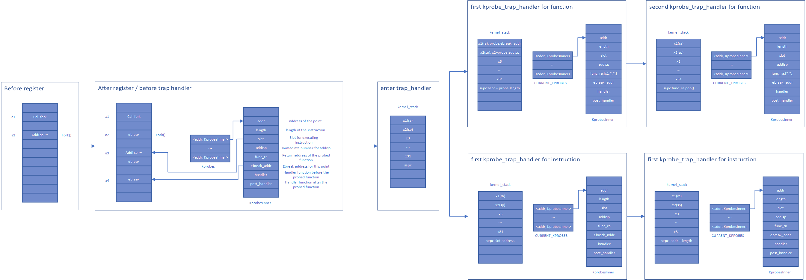

kprobes
设计思路
函数跟踪
-
注册阶段
- 根据传入的地址，解析指令，获取sp的变化值，与
handler，post_handler等一起存入kprobes数据结构中. - 将当前地址的指令改为
ebreak.
- 根据传入的地址，解析指令，获取sp的变化值，与
-
中断处理阶段
根据中断地址判断当前属于哪个
kprobe,并判断其属于哪一次中断.- 第一次中断
- 执行
handler. - 保存跟踪函数的返回值，并将其改为ebreak的地址.
- 根据解析出的sp值，对堆栈指针进行操作.
- 返回到中断指令的下一条指令.
- 执行
- 第二次中断
- 执行
post_handler. - 将中断的返回地址改为之前保存的返回值.
- 执行
- 第一次中断
指令跟踪
-
注册阶段
- 根据传入的地址，解析指令，判断是否合法(合法的判断条件同Linux的规则)，将
handler，post_handler等一起存入kprobes数据结构中. - 如果合法，将当前地址的指令存放到一片已经开辟了的内存空间中，并在指令后添加ebreak指令.
- 根据传入的地址，解析指令，判断是否合法(合法的判断条件同Linux的规则)，将
-
中断处理阶段
根据中断地址判断当前属于哪个
kprobe,并判断其属于哪一次中断.- 第一次中断
- 执行
handler. - 返回到注册阶段开辟出来的地址上.
- 执行
- 第二次中断
- 执行
post_handler. - 将中断返回地址改为原地址的下一条指令的地址.
- 执行
- 第一次中断
数据结构
- addr： 跟踪的地址
- length： 指令长度
- **slot：**指令插槽值
- **addisp：**栈指针偏移
- **func_ra：**返回值地址
- **func_ebreak_addr：**函数中断地址
- **insn_ebreak_addr：**指令中断地址
- **handler：**跟踪前回调函数
- **post_handler：**跟踪后回调函数
- **probe_type：**探测类型
流程图
流程图数据结构版
流程图堆栈版